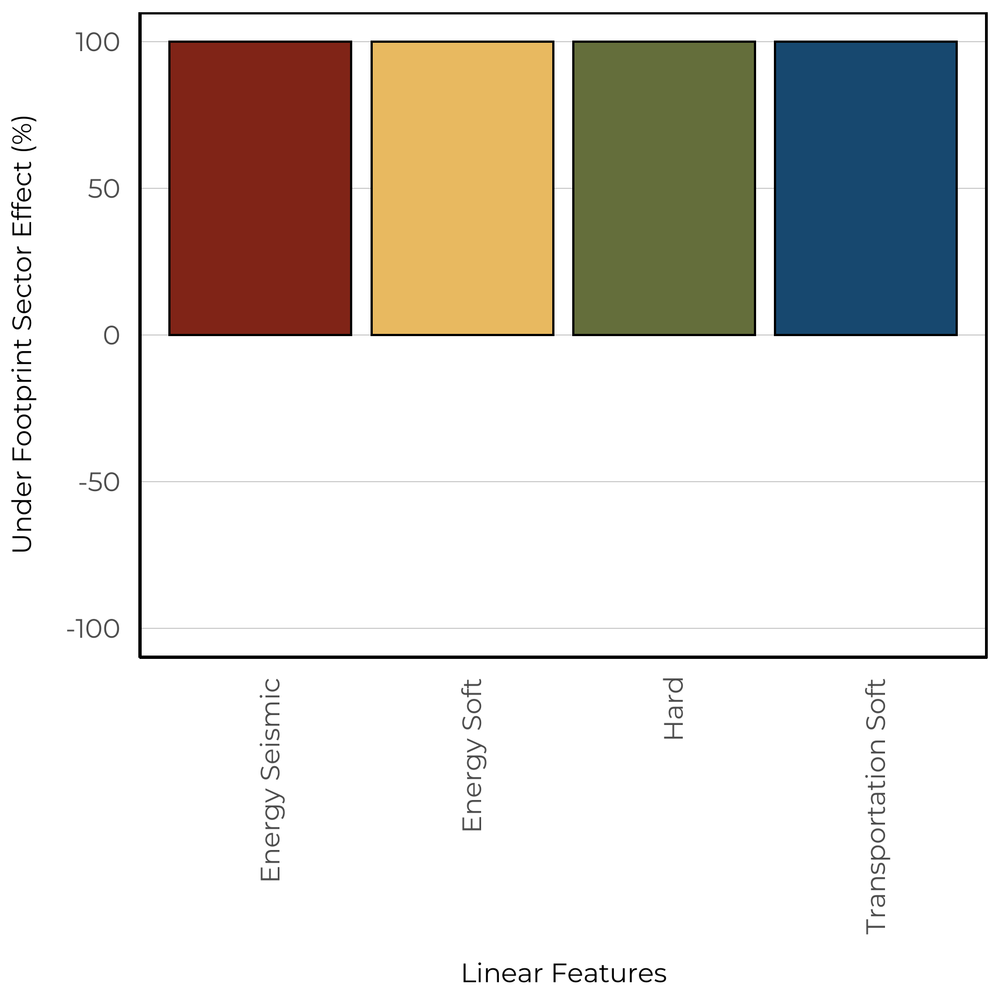
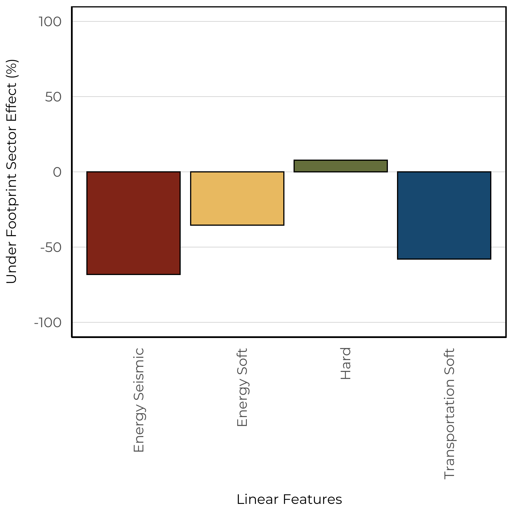
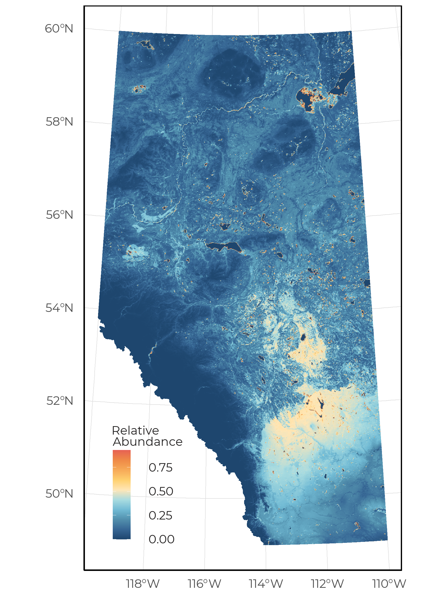
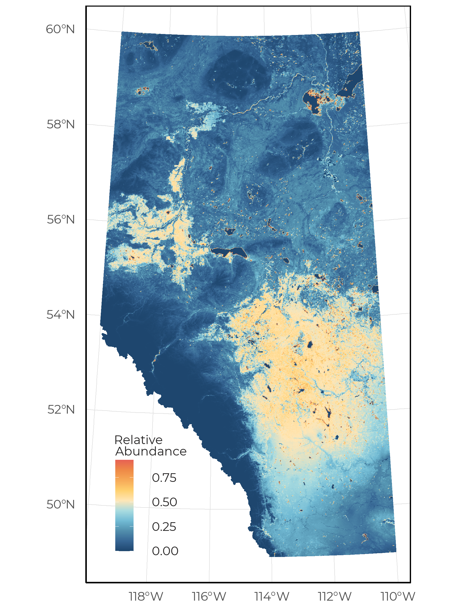

5 Boreal Chorus Frog
The Boreal Chorus Frog (Pseudacris maculata) is distributed throughout the entire province of Alberta, where it has been found to breed in small, shallow, wetlands with short grassy vegetation such as meadows, swamps and flooded fields (https://canadianherpetology.ca). In addition, they are also known to occupy flooded agricultural fields and small ponds in urban areas as breeding sites. This aligns with the vegetation based SDM where we predicted the species to have moderate to high abundances in both native wetland land cover and human footprint. Interestingly, we predicted high abundances of Boreal Chorus Frog in young cut-blocks. These habitats could have altered landscape properties that allow for shallow ephemeral ponds to form, thus creating attractive breeding sites.
5.1 Distribution
The Boreal Chorus Frog was very abundant in our data set and was detected at 68.6% of 1648 survey locations.
The occurrence of Boreal Chorus Frog detected between 2013-2021 at ABMI and BU locations.
5.2 Seasonality
With 4543 unique recordings of Boreal Chorus Frog, we were able to determine an optimal survey period. This species was vocalizing between early April to early July, with a peak calling frequency in mid May.
The frequency of detections across sites aggregated by Julian calendar day.
5.3 Vegetation Models
We were able to create a SDM using the vegetation land cover information with good fit (AUC = 0.81). The vegetation based model indicated that this species is predicted to have high abundance in native wetland (bogs, fens, swamps) and open upland (grass, shrub) habitats in addition to high abundance in crops, rough pasture, tame pasture, cut-blocks, and urban industrial footprints.
The predicted relative abundance (bars) of Boreal Chorus Frog as a function of vegetation and human footprint types in the forested region. Black vertical lines represent 90/% confidence intervals and blue vertical lines are added to forest types where harvesting occurs and shows the predicted species abundance in cut-blocks of various ages.
The spatial and climate component indicated positive relationships with Mean Warm Month Temperature and a non-linear relationship with the amount of open water.
The spatial and climate components from the vegetation based model for Boreal Chorus Frog.
5.4 Soil Models
We were able to create a SDM using the soil land cover information with moderate fit (AUC = 0.77). The soil based models predicted similar levels of abundance in all native and human footprint landcover types. There was minimal effect between treed and non-treed sites.
The predicted relative abundance (bars) of Boreal Chorus Frog as a function of soil and human footprint types in the prairie region. Black vertical lines represent 90/% confidence intervals. The presence/absence of trees affects the presence and abundance of many species; therefore, separate figures are presented for treed and non-treed sites in the prairie region.
The spatial and climate component indicated positive relationships with Mean Warm Month Temperature and latitude, a non-linear relationship with the amount of open water, and a negative relationship with longitude.
The spatial and climate components from the soil based model for Boreal Chorus Frog.
5.5 Linear Features
We estimate the impacts of four types of linear features: Energy seismic lines (wide and narrow), Energy soft linear (transmission lines, pipelines), Hard linear (roads and rails), Transportation soft linear (road verges). We predicted the change to species relative abundance inside areas that have been disturbed by each linear feature class compared to the habitat it replaced (modeled reference condition with no human footprint). Effects less than 0% indicate habitat suitability is reduced (predicted related abundance is lower) compared to reference conditions, and values more than 0% indicate habitat suitability is improved (predicted relative abundance is higher) compared to reference conditions.
Boreal Chorus Frog was predicted to increase in all linear feature types based on the vegetation models, while decreasing based in the soil models.
 
5.6 Predicted Abundance
Under reference conditions, Boreal Chorus Frog is predicted to be moderately abundant throughout all Natural Regions except the Rocky Mountains (left). Under current landcover conditions (2018 footprint) we observe high abundance throughout the Grassland and Parkland natural regions (right).
 
We predicted increases in suitable habitat for Boreal Chorus Frog throughout the Parkland Natural Region. This is driven by our models predicting high abundance in agricultural footprint types.
The change in predicted relative abundance of Boreal Chorus Frog as a function of vegetation, soil, human footprint, and space/cliamte across Alberta between reference and current condition (2018 footprint).
5.7 Sector Effects
Local sector effects represent the change to species relative abundance inside areas that have been disturbed by each sector (human footprint type) compared to the habitat it replaced (modeled reference condition with no human footprint). Sector effect values less than 0% indicate habitat suitability is reduced (predicted related abundance is lower) compared to reference conditions, and values more than 0% indicate habitat suitability is improved (predicted relative abundance is higher) compared to reference conditions.
Regional sector effects represent the change in the total regional population by industrial sector for species. This incorporates the area of the footprint, the native habitats where the footprint occurs, and the species response to a particular footprint. Regional population effect values less than 0% indicate a predicted decrease in the regional population due to a particular sector’s footprint, and values greater than 0% indicate a predicted increase.
5.7.1 Forested Region
We predicted that Boreal Chorus Frog has local positive responses to all sectors within this region. In addition, we observe a small regional effect of agriculture.
Regional (left) and local (right) sector effects for Boreal Chorus Frog within the Forested Region
5.7.2 Prairie Region
We predicted that Boreal Chorus Frog has local positive response to all sectors within this region. However, the responses are strongest for agriculture, forestry, and urban/industrial footprint types. In addition, we observe a moderate regional effect of agriculture.
Regional (left) and local (right) sector effects for Boreal Chorus Frog within the Prairie Region